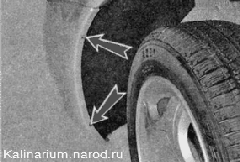
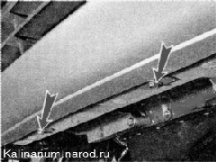
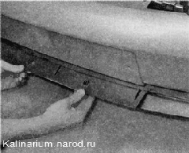
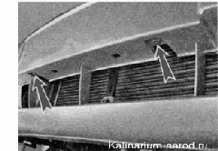
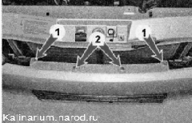
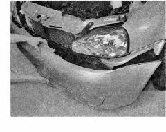
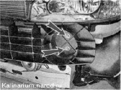

Передний бампер снятие и установкаСнятие 1. Подготавливаем автомобиль к выполнению работы. 2. Снимаем решетку радиатора. 3. Крестовой отверткой отворачиваем три самореза крепления передней части подкрылка переднего крыла к бамперу. Аналогичную операцию выполняем с другой стороны автомобиля.  4. Торцовым ключом на 10 мм отворачиваем три болта нижнего крепления бампера (один с правой стороны, а два спереди).  5. Крестовой отверткой отворачиваем два самореза крепления решетки к бамперу (по обоим сторонам). 6. Снимаем решетку с бампера. 7. На автомобилях с противотуманными фарами отсоединяем от них колодки проводов. 8. Крестовой отверткой отворачиваем два самореза нижнего крепления бампера к энергопоглощающей балке. 
9. Ключом на 10 мм отворачиваем два болта 1 и крестовой отверткой отворачиваем два самореза 2 верхнего крепления бампера к энергопоглощающей балке. 10. С двух сторон автомобиля выводим кромки бампера из зацепления с передними крыльями и снимаем бампер. 
11. Торцовым ключом на 13 мм отворачиваем четыре гайки (по две с каждой стороны) крепления энергопоглошаюшей балки бампера и снимаем балку. 
Установка Устанавливаем бампер в обратной последовательности. |